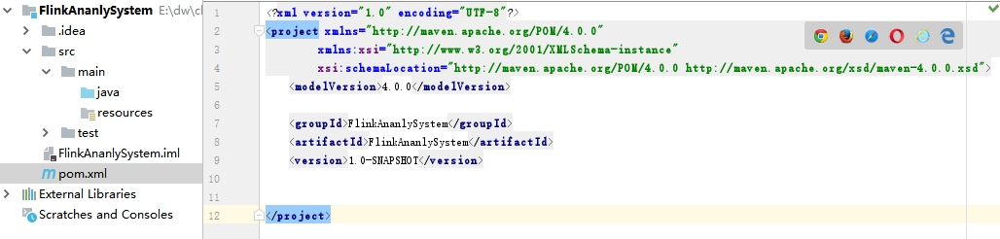
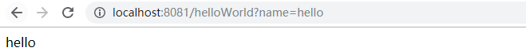

问题
大型电商系统，每天有上千表，累计十多亿数据更新，如何保证数据更新过程中生产应用高可用？
大型电商系统，每天有将近百万次数据查询请求，十多亿数据如何保证秒出查询结果？
现实情况：我们往往无法对海量的明细数据做进一步层次的预聚合，大量的业务数据都是好几亿数据关联
解决
为了让用户无论在app端还是pc端查询数据提供秒出的效果，我们可能会想过多种解决方案：
1、关系型数据库，但千万级表关联数据库基本上不太可能做到秒出，考虑过Sharding，但数据量大，各种成本都很高。
2、热数据存储到ElasticSearch，但无法跨索引关联，导致不得不做宽表，
3、用Redis键值对存储，但是无法做到实时汇总
ClickHouse是一款用于大数据实时分析的列式数据库管理系统，而非数据库。通过向量化执行以及对cpu底层指令集（SIMD）的使用，它可以对海量数据进行并行处理，从而加快数据的处理速度。
指标
全站流量分析
渠道分析
广告分析
订单分析
运营分析（团购、秒杀、指定活动）
概况统计
实现数据驱动四部曲
商业价值
1 采用Flink+ClickHouse架构，数据处理更高效
2 提高企业开发效率，节省企业开发成本
3 支持全端实时数据分析，让商业产能提高
4 精准的数据分析，让商业运营更高效
5 提高整个管理链条和产业链条的投入回报率
6 数据分析和数据挖掘更加精准，提高企业效益
设计架构的步骤应遵循:
先走通各个模块流程，整体兼顾
再来考虑模块的细节设计
先走通各个模块流程
新建FlinkAnanlySystem后端maven项目

新建module
module名字: jiangziDataCollect
首先搭建jiangziDataCollect的数据收集服务请求框架
整理依赖
1
2
3
4
| <modelVersion>4.0.0</modelVersion>
<groupId>FlinkAnanlySystem</groupId>
<artifactId>jiangziDataCollect</artifactId>
<version>1.0</version>
|
添加父依赖
父项目添加父依赖
1
2
3
4
5
6
| <parent>
<groupId>org.springframework.boot</groupId>
<artifactId>spring-boot-starter-parent</artifactId>
<version>2.0.2.RELEASE</version>
<relativePath/>
</parent>
|
数据收集项目添加spring boot依赖
1
2
3
4
5
6
7
8
9
10
11
|
<dependencies>
<dependency>
<groupId>org.springframework.boot</groupId>
<artifactId>spring-boot-starter-test</artifactId>
</dependency>
<dependency>
<groupId>org.springframework.boot</groupId>
<artifactId>spring-boot-starter-web</artifactId>
</dependency>
</dependencies>
|
添加配置文件
文件名：application.properties
目录：jiangziDataCollect/resources
1
2
| server.port=8081
spring.application.name=jiangziDataCollect
|
添加control层
包名: com.jiangzi.control
创建接口类: DataCollection.java
1
2
3
4
5
6
7
8
9
10
11
12
13
14
15
16
17
18
19
20
21
22
| package com.jiangzi.control;
import org.springframework.web.bind.annotation.RequestMapping;
import org.springframework.web.bind.annotation.RequestMethod;
import org.springframework.web.bind.annotation.RestController;
@RestController
public class DataCollection {
@RequestMapping(method = RequestMethod.GET,value ="helloWorld" )
public String toHelloWorld(String name) {
return name;
}
@RequestMapping(method = RequestMethod.POST,value ="dataCollect" )
public String dataCollect(String data) {
return data;
}
}
|
添加entity层
添加启动类
类名：DataCollectStarter.java
1
2
3
4
5
6
7
8
9
10
11
| package com.jiangzi;
import org.springframework.boot.SpringApplication;
import org.springframework.boot.autoconfigure.SpringBootApplication;
@SpringBootApplication
public class DataCollectStarter {
public static void main(String[] args) {
SpringApplication.run(DataCollectStarter.class);
}
}
|
启动服务测试项目
右键DataCollectStarter.java->run DataCollectStarter.java->
查看启动日志
1
2
3
4
5
6
7
8
9
10
11
12
13
14
15
16
17
18
19
20
21
22
23
24
25
26
27
28
29
30
31
32
33
34
35
| . ____ _ __ _ _
/\\ / ___'_ __ _ _(_)_ __ __ _ \ \ \ \
( ( )\___ | '_ | '_| | '_ \/ _` | \ \ \ \
\\/ ___)| |_)| | | | | || (_| | ) ) ) )
' |____| .__|_| |_|_| |_\__, | / / / /
=========|_|==============|___/=/_/_/_/
:: Spring Boot :: (v2.0.2.RELEASE)
2020-04-06 00:24:55.149 INFO 10792 --- [ main] com.jiangzi.DataCollectStarter : Starting DataCollectStarter on DESKTOP-97UMIIC with PID 10792 (E:\dw\clickhouse\jiangzi\FlinkAnanlySystem\jiangziDataCollect\target\classes started by uu in E:\dw\clickhouse\jiangzi\FlinkAnanlySystem)
2020-04-06 00:24:55.153 INFO 10792 --- [ main] com.jiangzi.DataCollectStarter : No active profile set, falling back to default profiles: default
2020-04-06 00:24:55.186 INFO 10792 --- [ main] ConfigServletWebServerApplicationContext : Refreshing org.springframework.boot.web.servlet.context.AnnotationConfigServletWebServerApplicationContext@71c8becc: startup date [Mon Apr 06 00:24:55 CST 2020]; root of context hierarchy
2020-04-06 00:24:56.387 INFO 10792 --- [ main] o.s.b.w.embedded.tomcat.TomcatWebServer : Tomcat initialized with port(s): 8080 (http)
2020-04-06 00:24:56.420 INFO 10792 --- [ main] o.apache.catalina.core.StandardService : Starting service [Tomcat]
2020-04-06 00:24:56.420 INFO 10792 --- [ main] org.apache.catalina.core.StandardEngine : Starting Servlet Engine: Apache Tomcat/8.5.31
2020-04-06 00:24:56.424 INFO 10792 --- [ost-startStop-1] o.a.catalina.core.AprLifecycleListener : Loaded APR based Apache Tomcat Native library [1.2.21] using APR version [1.6.5].
2020-04-06 00:24:56.424 INFO 10792 --- [ost-startStop-1] o.a.catalina.core.AprLifecycleListener : APR capabilities: IPv6 [true], sendfile [true], accept filters [false], random [true].
2020-04-06 00:24:56.424 INFO 10792 --- [ost-startStop-1] o.a.catalina.core.AprLifecycleListener : APR/OpenSSL configuration: useAprConnector [false], useOpenSSL [true]
2020-04-06 00:24:56.438 INFO 10792 --- [ost-startStop-1] o.a.catalina.core.AprLifecycleListener : OpenSSL successfully initialized [OpenSSL 1.1.1a 20 Nov 2018]
2020-04-06 00:24:56.536 INFO 10792 --- [ost-startStop-1] o.a.c.c.C.[Tomcat].[localhost].[/] : Initializing Spring embedded WebApplicationContext
2020-04-06 00:24:56.536 INFO 10792 --- [ost-startStop-1] o.s.web.context.ContextLoader : Root WebApplicationContext: initialization completed in 1350 ms
2020-04-06 00:24:56.684 INFO 10792 --- [ost-startStop-1] o.s.b.w.servlet.ServletRegistrationBean : Servlet dispatcherServlet mapped to [/]
2020-04-06 00:24:56.691 INFO 10792 --- [ost-startStop-1] o.s.b.w.servlet.FilterRegistrationBean : Mapping filter: 'characterEncodingFilter' to: [
favicon.ico] onto handler of type [class org.springframework.web.servlet.resource.ResourceHttpRequestHandler]
2020-04-06 00:24:57.031 INFO 10792 --- [ main] s.w.s.m.m.a.RequestMappingHandlerAdapter : Looking for @ControllerAdvice: org.springframework.boot.web.servlet.context.AnnotationConfigServletWebServerApplicationContext@71c8becc: startup date [Mon Apr 06 00:24:55 CST 2020]; root of context hierarchy
2020-04-06 00:24:57.089 INFO 10792 --- [ main] s.w.s.m.m.a.RequestMappingHandlerMapping : Mapped "{[/helloWorld],methods=[GET]}" onto public java.lang.String com.jiangzi.control.DataCollection.toHelloWorld(java.lang.String)
2020-04-06 00:24:57.094 INFO 10792 --- [ main] s.w.s.m.m.a.RequestMappingHandlerMapping : Mapped "{[/error]}" onto public org.springframework.http.ResponseEntity<java.util.Map<java.lang.String, java.lang.Object>> org.springframework.boot.autoconfigure.web.servlet.error.BasicErrorController.error(javax.servlet.http.HttpServletRequest)
2020-04-06 00:24:57.094 INFO 10792 --- [ main] s.w.s.m.m.a.RequestMappingHandlerMapping : Mapped "{[/error],produces=[text/html]}" onto public org.springframework.web.servlet.ModelAndView org.springframework.boot.autoconfigure.web.servlet.error.BasicErrorController.errorHtml(javax.servlet.http.HttpServletRequest,javax.servlet.http.HttpServletResponse)
2020-04-06 00:24:57.121 INFO 10792 --- [ main] o.s.w.s.handler.SimpleUrlHandlerMapping : Mapped URL path [/webjars
|
看到有Tomcat started on port(s): 8081 (http) with context path ‘’的字样说明启动成功
浏览结果
浏览器输入: localhost:8081/helloWorld?name=hello

这个简单的数据收集服务框架就搭建完毕了，接下来在此基础上添加更复杂的功能!